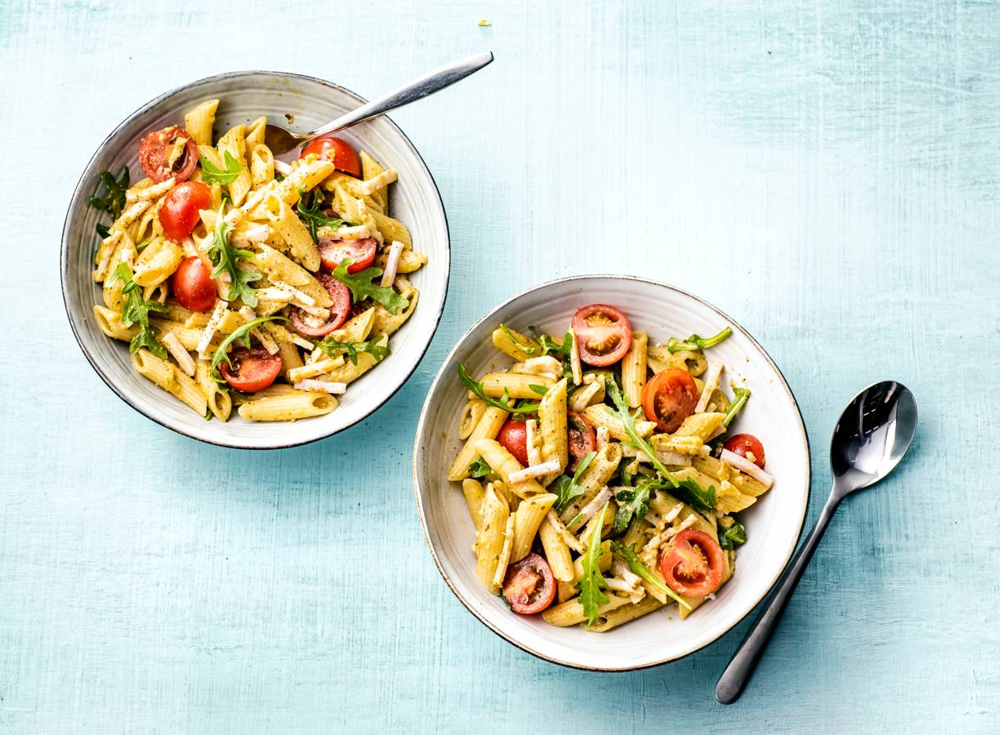

Pasta pesto!

Pasta pesto, a timeless classic done in less then 30 minutes.
The perfect dish for a nice summer day.
The blend of tomatoes, pesto and parmazaan cheese bring out a fresh flavour.
This dish is also perfectly servable cold, so any leftovers can be enjoyed the next day.
What you are going to need for the recipe (2 person):
- Pasta, tagliatelli or penne is preferred (250g)
- Sun dried tomatoes, cherrytomatoes also work
- Pesto (100g)
- Pinetree seeds (25g)
- Parmazaan cheese (25g)
- Chicken breast (200g)
- Chicken spices
Now for the preparation:
- Start boiling 2l of water.
- Slice the chicken breast into cubes, spice them a little.
- Start baking the pine seeds in a small pan on low heat.
- Boil the pasta for based on the instructions.
- Prepare chicken in the pan. this will take around 6 minutes.
- When the pasta is done cooking, take some of the hot water used to boil it. Discard the rest.
- Mix the pesto 1:1 with hot water.
- Mix the pesto into the pasta.
- Serve with chicken, sprinkle with pine seeds and parmazaan.
- Bon appetite !
Return to recipes.